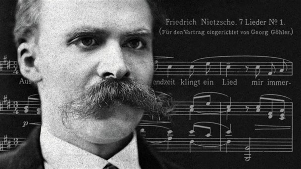

Sin música la vida seria un error
La música es un lenguaje universal que trasciende las barreras culturales y lingüísticas. Tiene el
poder
de
evocar emociones y despertar sensaciones que difícilmente se pueden lograr con palabras. Desde
tiempos
remotos, los seres humanos han utilizado la música para expresar sus más profundos sentimientos,
celebrar
momentos de alegría y consolarse en momentos de tristeza. La música nos conecta con nosotros mismos
y
con
los demás de una manera única

Imaginemos un mundo sin música. Sería un mundo carente de ritmo, armonía y melodía. Sería un mundo
silencioso, desprovisto de las vibraciones y resonancias que nos conmueven. La música tiene la
capacidad
de
despertar la pasión, inspirar la creatividad y elevar el espíritu humano. Nos proporciona un escape
de
la
rutina, nos ayuda a encontrar consuelo en momentos de soledad y nos acompaña en los momentos más
felices
de
nuestras vidas. La música tiene el poder de hacernos sentir vivos.
La filosofía de Nietzsche
Entre las divisiones que se han propuesto para las obras de Nietzsche, quizá la más sincrética sea la
que distingue entre un primer período de crítica de la cultura y un segundo período de madurez en
que sus obras adquieren un tono más metafísico, al tiempo que se vuelven más aforísticas y
herméticas. Si el primer aspecto fue el que más impacto causó en su época, la interpretación
posterior, a partir de Heidegger, se ha fijado sobre todo en sus últimas obras.
Como crítico de la cultura occidental, Nietzsche considera que su sentido ha sido siempre reprimir la
vida (lo dionisíaco) en nombre del racionalismo y de la moral (lo apolíneo); la filosofía, que desde
Platón ha transmitido la imagen de un mundo inalterable de esencias, y el cristianismo, que propugna
idéntico esencialismo moral, terminan por instaurar una sociedad del resentimiento, en la que el
momento presente y la infinita variedad de la vida son anulados en nombre de una vida y un orden
ultraterrenos, en los que el hombre alivia su angustia.
Su labor hermenéutica se orienta en este período a mostrar cómo detrás de la racionalidad y la moral
occidentales se hallan siempre el prejuicio, el error o la mera sublimación de los impulsos vitales.
La «muerte de Dios» que anuncia el filósofo deja al hombre sin la mezquina seguridad de un orden
trascendente, y por tanto enfrentado a la lucha de distintas voluntades de poder como único motor y
sentido de la existencia.